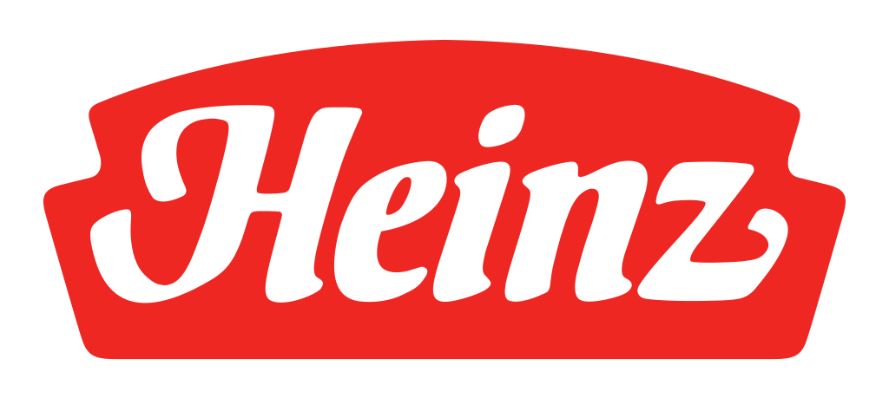

하인즈 Heinz
하인즈(Heinz)는 1869년 헨리 J. 하인즈가 미국 펜실베이니아주 샤프스버그에서 설립한 식품 회사로, 케첩을 비롯한 가공식품으로 유명하다. 2015년 크래프트 푸즈와의 합병으로 크래프트 하인즈가 출범했다.
최종 업데이트

하인즈는 어떤 브랜드인가
하인즈(Heinz)는 1869년 헨리 J. 하인즈(Henry J.
Heinz)가 미국 펜실베이니아주 샤프스버그(피츠버그 인근)에서 설립한 식품 회사다. 1896년 도입된 '57 Varieties' 슬로건은 실제 제품 수와 무관하게 거의 임의로 정해진 숫자로, 신발 광고의 '21가지 스타일'에서 착안해 선택했다고 전해진다.
2015년 7월 크래프트 푸즈 그룹과의 합병으로 크래프트 하인즈(The Kraft Heinz Company)가 출범했으며, 하인즈는 그 산하 브랜드다.
하인즈는 어떻게 봐야 할까
하인즈는 1876년 미국에서 토마토케첩을 출시하고 1896년 도입한 '57 varieties' 표현을 지금까지 병에 새겨 세계 최대 케첩 브랜드로 자리 잡았다. 미국 케첩 시장에서 약 절반 안팎의 점유율로 1위이며, 핵심 경쟁자인 헌츠(Hunt's)와의 격차가 큰 점이 차별점이다.
2015년 크래프트와 합병해 북미 3위 식품기업 크래프트하인즈를 형성했고, 2024년 매출 약 154억 달러 규모의 글로벌 사업부와 북미 식료품 사업부로 2025년 분할이 발표되면서 하인즈 케첩은 브랜드명을 유지한 채 글로벌 사업부에 남았다. 한국에서는 1986년 서울하인즈로 진출했지만 이미 시장을 선점한 오뚜기(약 77% 점유)에 밀려, 종주국 대표 브랜드임에도 수입 케첩 위치에 머무는 역전 현상이 나타난다는 점이 한국 시장의 특징이다.
하인즈는 어떻게 시작되고 성장했나
케첩으로 잘 알려진 브랜드 하인즈(Heinz)는 1869년, 헨리 하인즈가 미국 피츠버그에서 피클을 판매하면서 시작되었다. 그는 무엇보다 고객과의 신뢰를 중요하게 생각하여 고객들이 직접 내용물을 확인할 수 있도록 투명한 병을 사용하였다.
오늘날 세계적인 식품 브랜드로 성장한 하인즈는 현재까지 그 명성을 이어오고 있다.
하인즈의 브랜드 아이덴티티는 무엇인가
하인즈의 핵심 시각 요소는 펜실베이니아주(별칭 '키스톤 스테이트')를 상징하는 키스톤(쐐기돌) 형태의 라벨이다. 키스톤 라벨 중앙에는 '57 varieties' 문구가 작은 글씨로 배치되며, 녹색 '하인즈 피클' 모티프와 함께 19세기부터 이어진 대표 표식으로 기능한다.
주색은 케첩에서 유래한 강렬한 적색(하인즈 레드)이며 보조색으로 녹색(피클 그린) 계열이 쓰인다. 워드마크는 오른쪽으로 약간 기운 둥글고 부드러운 커스텀 서체로, 라벨에서는 아치형으로 배열된다.
일부 자료가 언급하는 청록(터쿼이즈) 색상은 신뢰할 만한 복수 출처에서 확인되지 않는다.
하인즈의 대표 제품과 서비스는 무엇인가
하인즈는 케첩뿐만 아니라 파스타 소스, 데미그라스 소스 등을 출시하며 전 세계적으로 사랑받고 있다. 또한, 제품에 담긴 하인즈의 자부심을 전달하기 위해 제품 샘플을 적극적으로 배포하여 고객들의 신뢰를 쌓아왔고 이를 통해 가공 식품 사업의 선도 기업으로 자리매김했다.
Tomato Ketchup BIO, Tomato Ketchup, ベイクドビーンズ, Tomato ketchup
하인즈는 지금 어떤 상태인가
하인즈는 2015년 합병으로 설립된 크래프트 하인즈의 핵심 브랜드로 운영되며, '57 Varieties' 표기와 키스톤 라벨, 적색 정체성은 오늘날까지 케첩 등 주력 제품에 유지된다.
하인즈 연혁 — 주요 사건은 언제였나
하인즈 로고는 어떻게 변해왔나
대표 로고대표 브랜드 마크
BI/CI 아카이브 2보관 이미지 2자주 묻는 질문
하인즈는 어느 나라 브랜드인가요?
하인즈는 미국의 식음료 브랜드입니다.
하인즈는 언제 설립되었나요?
하인즈는 1869년 설립되었습니다.
하인즈의 브랜드 아이덴티티는 무엇인가요?
하인즈의 핵심 시각 요소는 펜실베이니아주(별칭 '키스톤 스테이트')를 상징하는 키스톤(쐐기돌) 형태의 라벨이다.
하인즈의 대표 제품은 무엇인가요?
하인즈는 케첩뿐만 아니라 파스타 소스, 데미그라스 소스 등을 출시하며 전 세계적으로 사랑받고 있다.
하인즈는 현재 어떤 상태인가요?
하인즈는 2015년 합병으로 설립된 크래프트 하인즈의 핵심 브랜드로 운영되며, '57 Varieties' 표기와 키스톤 라벨, 적색 정체성은 오늘날까지 케첩 등 주력 제품에 유지된다.
출처와 검증
브랜드명은 한글과 원어를 함께 표기하되 데이터에 없는 표기는 만들지 않습니다. 기원 국가·설립연도는 검수된 정의문에서 확인된 값을 우선하고, 없을 때만 공식 웹사이트 URL이 일치하는 위키데이터 개체의 값을 씁니다.